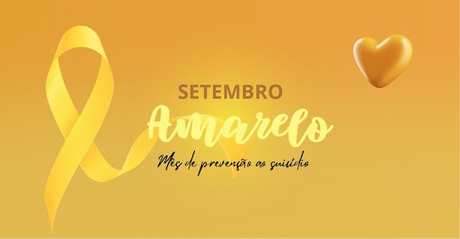

O que e Setembro Amarelo❔
O Setembro Amarelo é uma campanha nacional de conscientização sobre a prevenção ao suicídio, realizada todos os anos durante o mês de setembro. Criada em 2015 no Brasil, a iniciativa é promovida pela Associação Brasileira de Psiquiatria (ABP) em parceria com o Conselho Federal de Medicina (CFM), e tem como objetivo quebrar tabus, reduzir o estigma e incentivar o diálogo sobre saúde mental.
O dia 10 de setembro é reconhecido
mundialmente como o Dia Internacional de
Prevenção ao Suicidio. Durante todo o mês,
instituições, escolas, empresas e órgãos
públicos se mobilizam para sensibilizar a
população e oferecer informações e apoio a
quem precisa.
A maioria dos casos pode ser evitada com apoio psicológico, acompanhamento médico e uma rede de acolhimento.
Ouça sem julgamentos: muitas vezes, a pessoa só precisa ser acolhida.
Ofereça apoio e companhia: pequenas atitudes podem fazer diferença.
Incentive a busca por ajuda profissional: psicólogos, psiquiatras e grupos de apoio são fundamentais.
Compartilhe informações seguras: evite conteúdos que romantizem ou incentivem o sofrimento.
Se você ou alguém que você conhece está passando por um momento difícil, não hesite em pedir ajuda.
- Ilumine prédios e monumentos de amarelo.
- Promova palestras, rodas de conversa e ações educativas.
- Compartilhe conteúdos informativos nas redes sociais.
- Vista-se de amarelo e ajude a espalhar a mensagem de esperança.